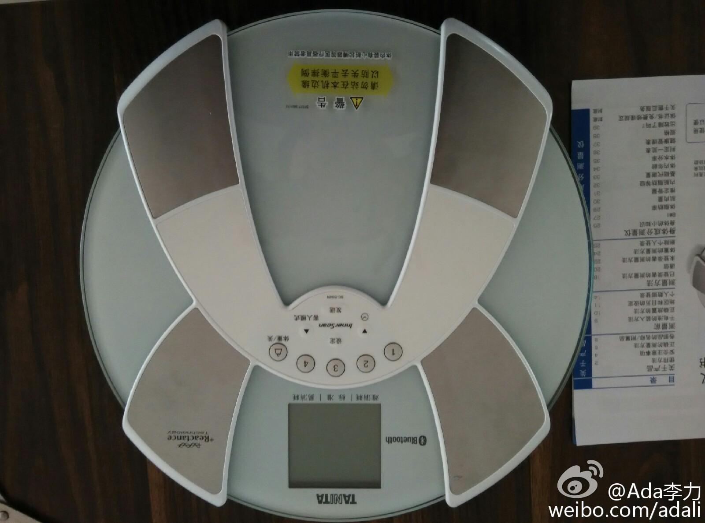

锻炼了一个多月后，发现体重一点儿没降。觉得这样下去健身的积极性都要给打击掉了，于是买个脂肪秤，监控一下其它的身体指标，很有用处，体重没变，但体脂肪率在下降。这是个非常好的趋势，我只要继续坚持就可以。在做一件长期的事情时，数据反馈非常必要，这也是以往工作经验在生活中的一个小小应用。 
//@爱折腾的海宇Zhen:我曾经也尝试各种方法后才发现“正确”的关闭方式，the design of everyday things提到，用户在这种情况下首先怀疑的是自己而不是designer本身就是一个问题；微博的UI在很多功能设计上缺少了所谓的affordance，点击图片这一操作intuitively是放大图片而且微博没有给出任何hint@Ada李力:使用iPad上的微博应用时，总被打开的大图如何关闭头疼，尝试了各种手势，有时起作用，有时没作用，觉得微博产品果然做得滥。今天在iPhone手机上用微博也遇到了同样的问题，我觉得自己该上网查查应该怎么解决这个难题了，搜索一圈，竟然没有这方面的提问和解答，我开始怀疑自己是否把问题搞复杂了......